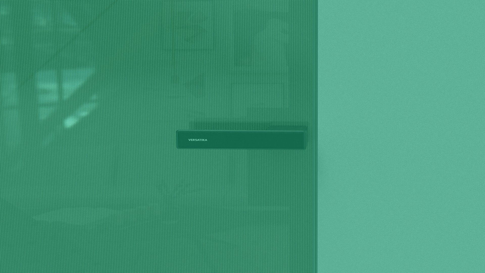

Healthcare & Institutional Glass
Healthcare & Institutional Glass

Medical-Grade Solutions. Environmental Leadership.
FDA-compliant glass, LEED-certified systems, cleanroom specifications—build healing environments with precision engineering.
Glass is essential infrastructure. From surgical suites to patient rooms, we deliver solutions that heal—safe, sterile, durable, and environmentally responsible.
Sterile, safe glass for surgical suites, operating rooms, and cleanroom environments.
Low-E coatings, solar control, superior insulation for sustainable healthcare facilities.
Seamless flush-to-wall doors for patient privacy, examination rooms, isolation units.
ISO Class 5-7 cleanroom compatible glass with zero outgassing, particle-free assembly.
Soundproof glass for mental health facilities, psychiatric units, sensitive care areas.
ADA-compliant glass solutions with safety features for aging and rehabilitation facilities.
Class I/II medical-grade manufacturing and quality assurance
ASTM E84 (flamespread), E119 (fire rating), C1048 (tempered)
European safety, thermal, and acoustic standards
Sustainable building materials, EAc1 & EQc8 eligible
Environmental management system certified
Joint Commission International healthcare standards

Project Scope: Premium glass systems for a large-scale health and wellness facility requiring medical-grade cleanliness standards and architectural excellence
Glass Solutions:
Impact: Facility achieved top-tier environmental and hygiene certification. Medical precision + architectural beauty — the same standard we bring to every US project. Delivery: 4-6 weeks.
Schedule a facilities consultation with our healthcare glass specialists.